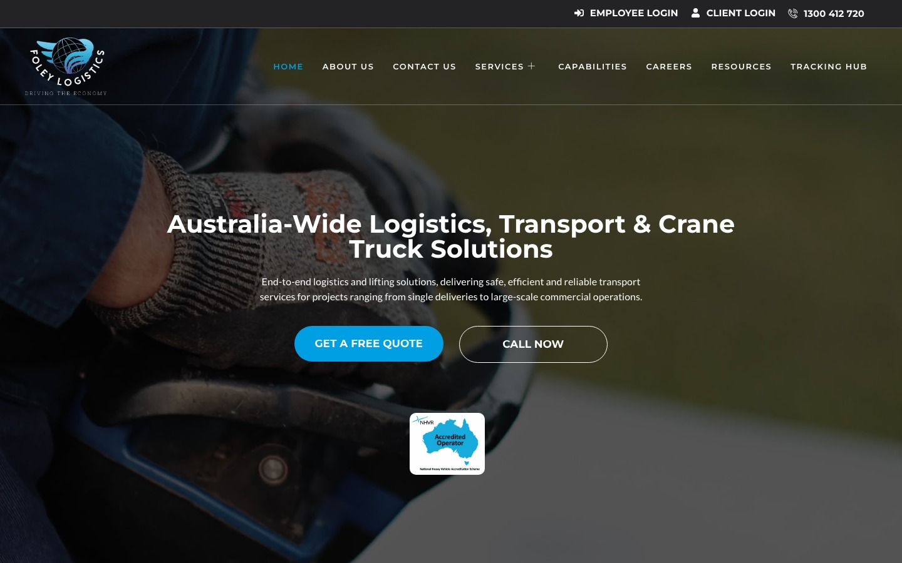
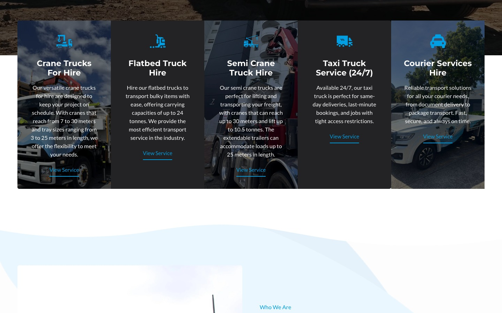
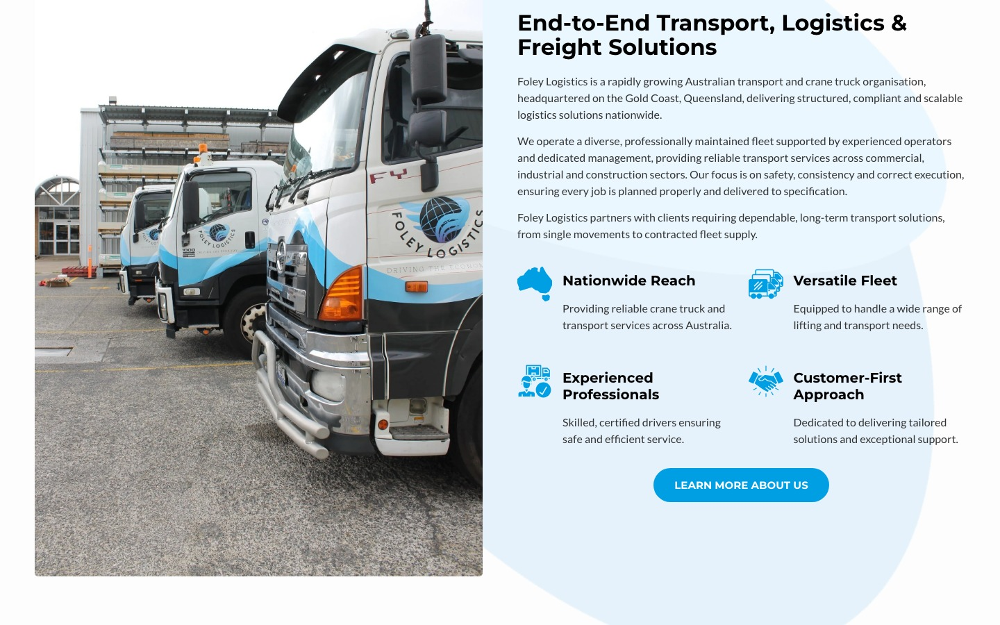
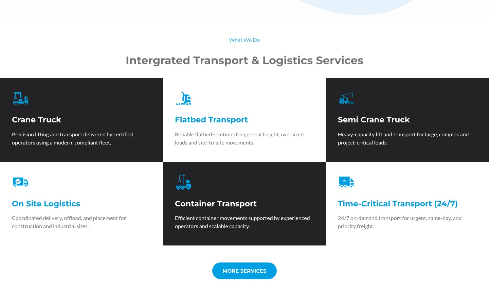

Foley Logistics is a crane truck hire and heavy freight transport company based in Gold Coast, Australia. They operate a large fleet of vehicles across multiple depots and need strict pre-start safety checks before every shift.
I built the Foley Pre-Start plugin — a fully custom WordPress plugin that digitises the entire vehicle inspection workflow, from driver login to manager sign-off.
Pre-start inspections were done on paper. Forms were frequently lost or incomplete, fault reports could sit unread for days, and there was no reliable audit trail for compliance purposes.
The client needed a solution that worked on mobile at depot sites, required minimal driver training, and gave managers real-time visibility over the fleet's condition.
A custom WordPress plugin (v2.3.2) handling the complete inspection lifecycle:
Built on WordPress with no third-party SaaS dependency — all inspection data stays on the client's own server for compliance and privacy.

Architected the Foley Pre-Start plugin in PHP 8 — a full digital inspection system with driver portals, conditional checklists by vehicle type, photo uploads, and digital sign-off. No page builder, hand-coded.

Built fault-reporting logic that flags issues in real time, classifies severity, and routes them to the right manager dashboard — backed by Action Scheduler background jobs for notifications and escalation.

Engineered a timestamped, fully self-hosted audit trail (MySQL) — no third-party SaaS — giving the client a compliant inspection record entirely on their own infrastructure.